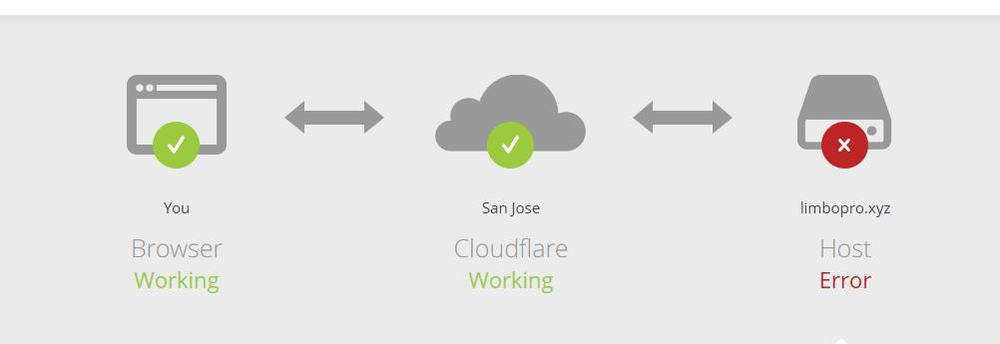

<?xml version="1.0" encoding="UTF-8"?>
<rss version="2.0"
xmlns:content="http://purl.org/rss/1.0/modules/content/"
xmlns:dc="http://purl.org/dc/elements/1.1/"
xmlns:slash="http://purl.org/rss/1.0/modules/slash/"
xmlns:atom="http://www.w3.org/2005/Atom"
xmlns:wfw="http://wellformedweb.org/CommentAPI/">
<channel>
<title>毒奶博主丨欢迎使用代理访问本站。 - 压力测试</title>
<link>https://limbopro.xyz/tag/压力测试/</link>
<atom:link href="https://limbopro.xyz/feed/tag/%E5%8E%8B%E5%8A%9B%E6%B5%8B%E8%AF%95/" rel="self" type="application/rss+xml" />
<language>zh-CN</language>
<description></description>
<lastBuildDate>Tue, 02 Jul 2019 16:55:00 +0800</lastBuildDate>
<pubDate>Tue, 02 Jul 2019 16:55:00 +0800</pubDate>
<item>
<title>用 WebBench 进行网站压力测试</title>
<link>https://limbopro.xyz/archives/1035.html</link>
<guid>https://limbopro.xyz/archives/1035.html</guid>
<pubDate>Tue, 02 Jul 2019 16:55:00 +0800</pubDate>
<dc:creator>毒奶</dc:creator>
<description><![CDATA[WebBench-简洁优美的网站压力测试工具Webbench是Linux下的一个网站压力测试工具，能测试处在相同硬件上，不同服务的性能以及不同硬件上同一个服务的运行状况。webbench的标准测...]]></description>
<content:encoded xml:lang="zh-CN"><![CDATA[
<h1>WebBench-简洁优美的网站压力测试工具</h1><p></p><p><code>Webbench</code>是Linux下的一个<code>网站压力测试工具</code>，能测试处在相同硬件上，不同服务的性能以及不同硬件上同一个服务的运行状况。webbench的标准测试可以向我们展示服务器的两项内容：每分钟相应请求数和每秒钟传输数据量。webbench最多<code>可以模拟3万个并发连接</code>去测试<code>网站的负载能力</code>。</p><p>测试的环境是 <code>Linux Ubuntu</code></p></img><p class="more"><a href="../../../archives/1035.html" title="用 WebBench 进行网站压力测试">[...]</a></p>
]]></content:encoded>
<slash:comments>0</slash:comments>
<comments>https://limbopro.xyz/archives/1035.html#comments</comments>
<wfw:commentRss>https://limbopro.xyz/feed/archives/1035.html</wfw:commentRss>
</item>
</channel>
</rss>